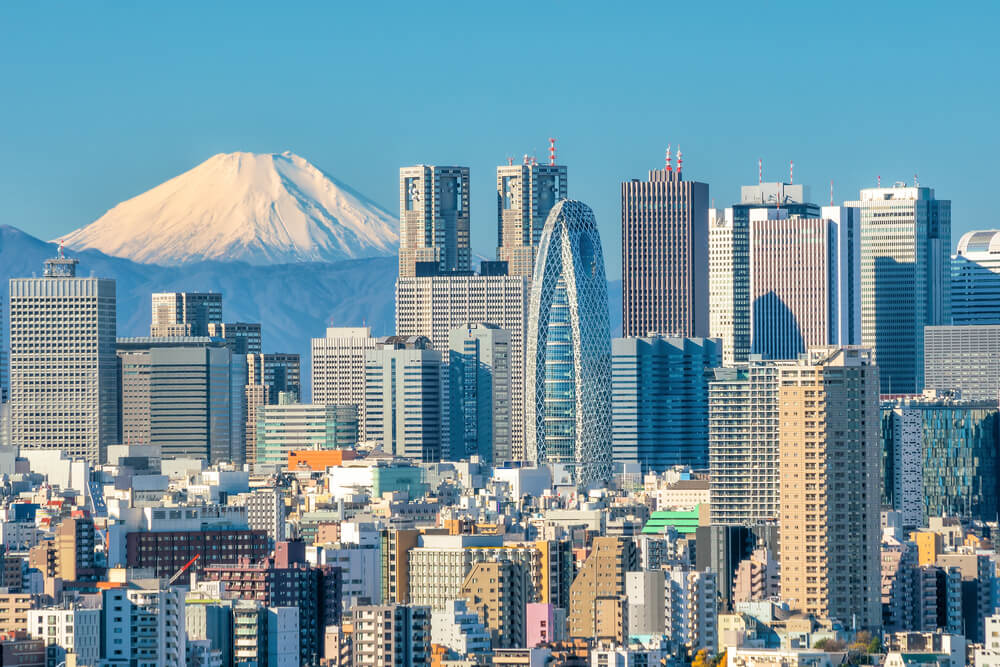
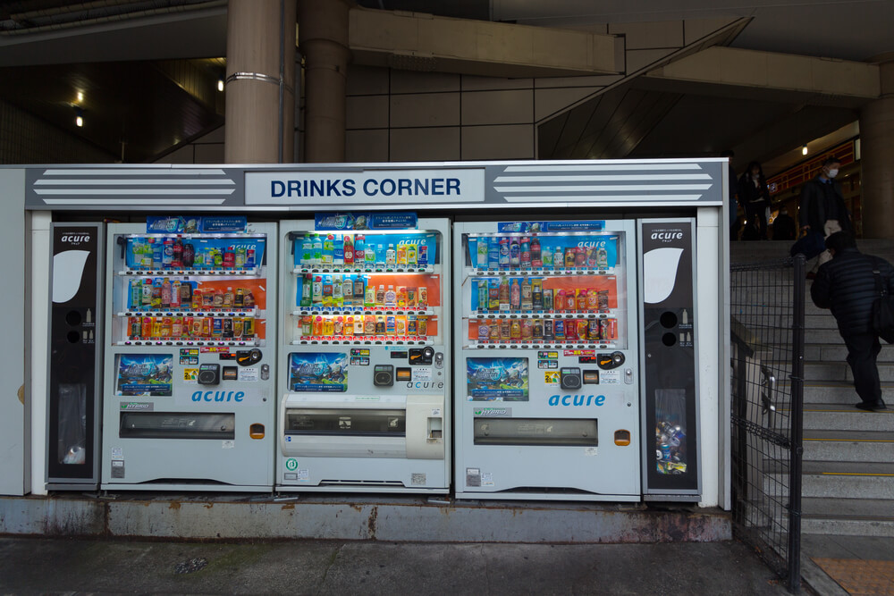
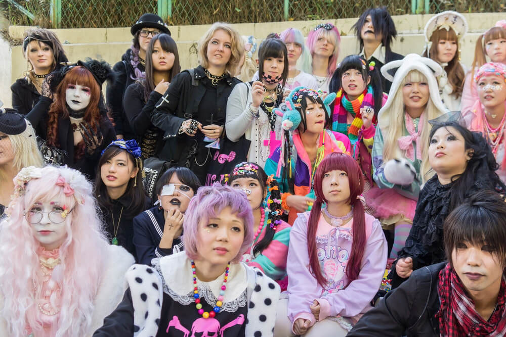
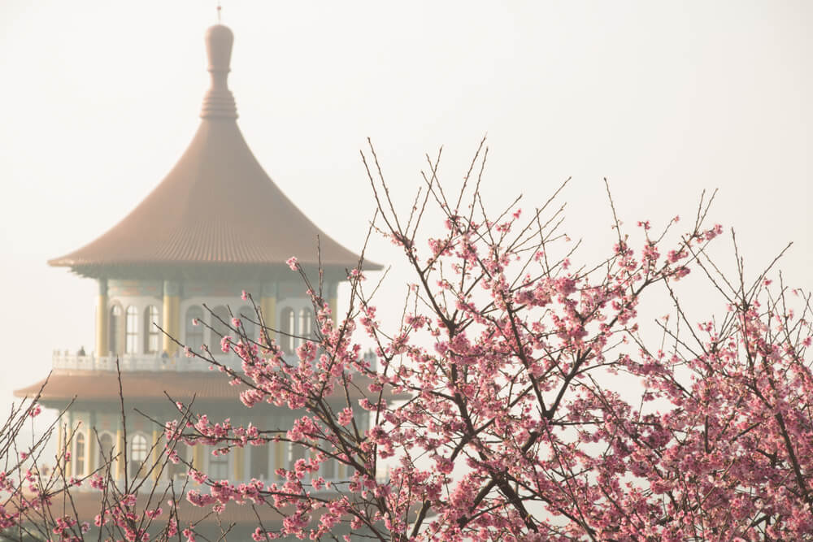
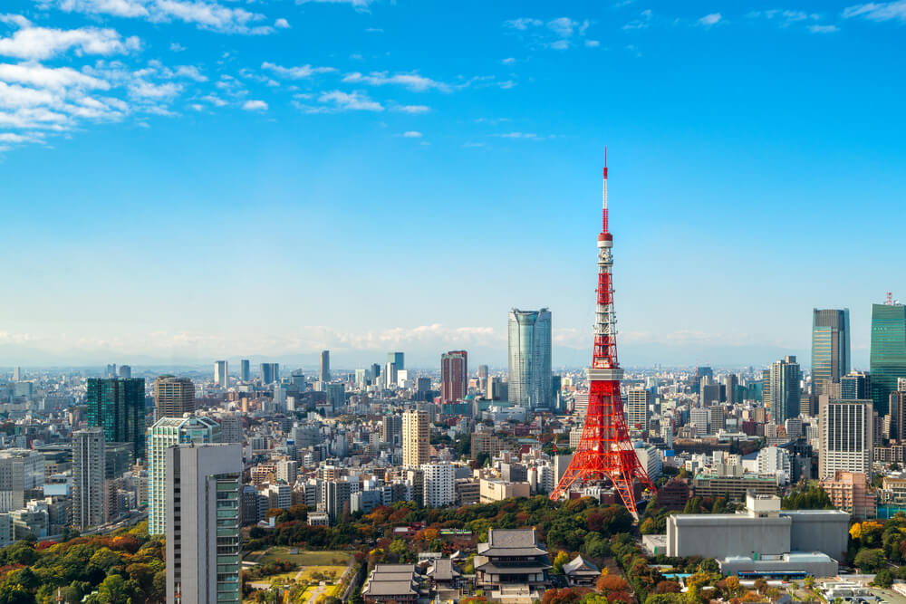
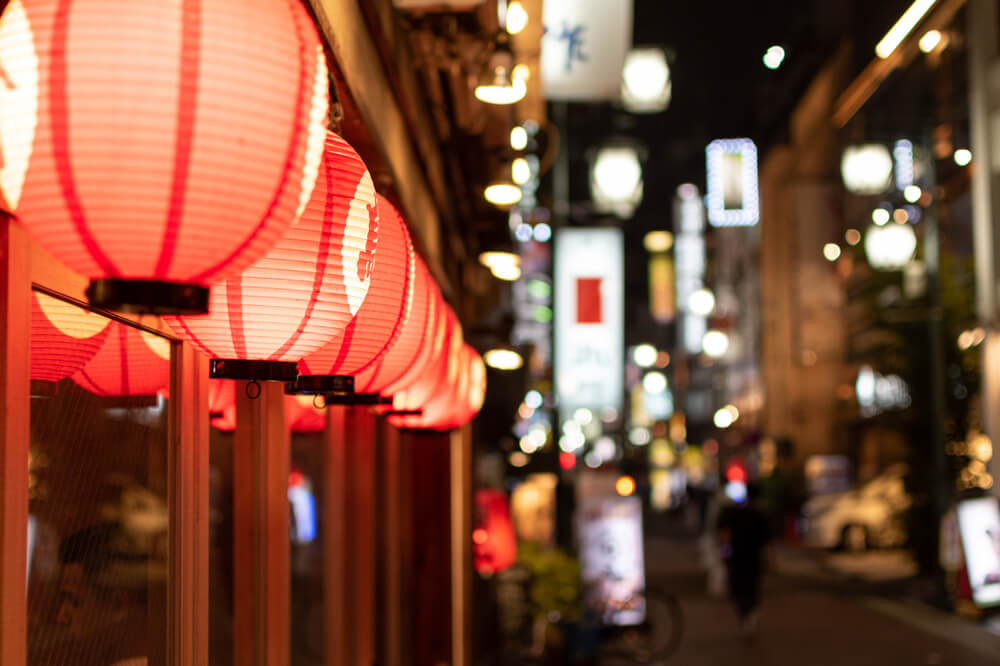
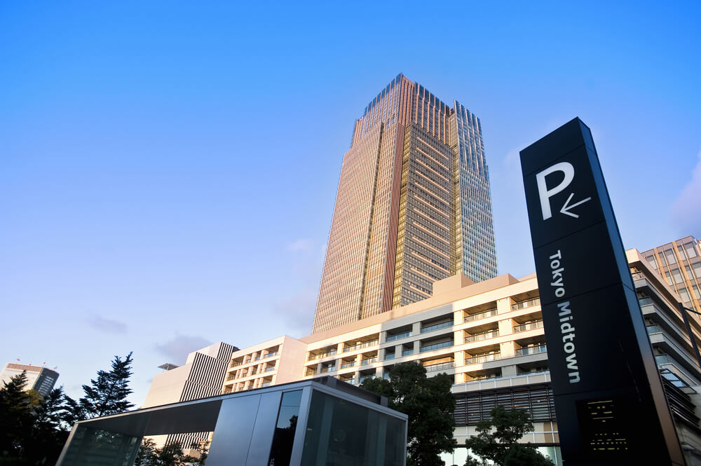
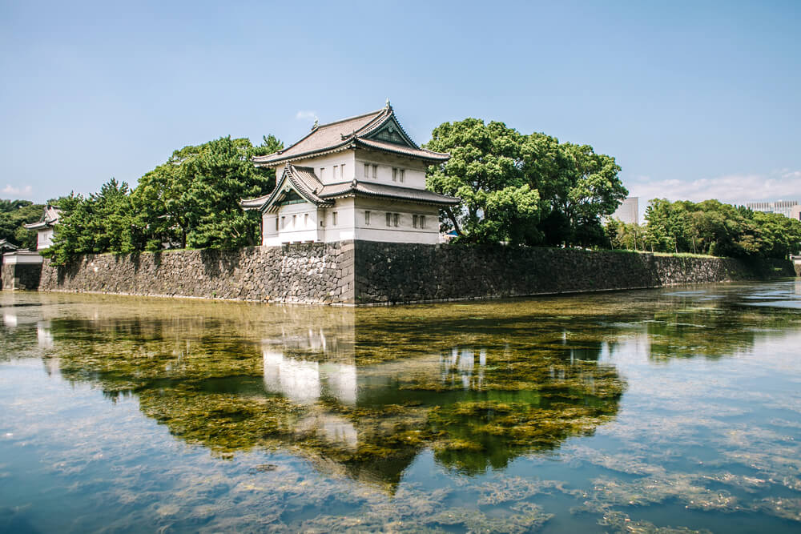
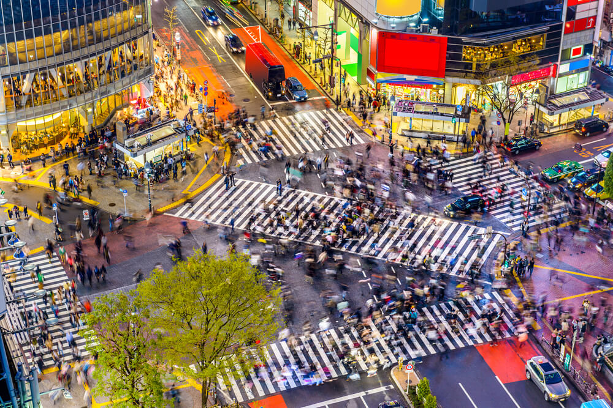

Tokyo Hakkında 10 İlginç Bilgi
-
1 - Dünyanın En Büyük Metropolü
Tokyo’nun dünyanın en büyük metropolü olduğunu biliyor muydunuz? Evet, Tokyo şehri tam 3 bölgeden oluşan ve 36 milyondan fazla insana ev sahipliği yapan dünyanın en büyük metropolü unvanına sahip.

-
2 - Aslında Tokyo Farklı Bir İsme Sahipti
Yakın bir zaman öncesine kadar, yakın derken 20. yüzyıla kadar Tokyo şehri “Edo” ismiyle biliniyordu. Meiji devriminden sonra 1890 yılında şehrin ismi Tokyo olarak değiştirildi.

-
3 - Her Yerde Otomat!
Gerçekten te Tokyo’ya 10-12 metrede bir otomata rastlamak mümkün. Bunun abartı olduğunu düşünebilirsiniz ama hayır. Tokyo tam bir otomat şehridir. Japonya’nın elektrik enerjisinin %3’ünü bu otomat makineleri için harcadığı bilinen bir gerçektir.

-
4 - Alternatif Sokak Modası
Çoğu insan Tokyo şehrinin bu yönünü bilmiyor. Ancak Tokyo’nun Harajuku bölgesi, alternatif sokak modasıyla ünlü bir yer. Japon gençlik kültürünün nabzını tutan bu yerde, oldukça farklı giyinmiş insanlarla karşılaşmak mümkün.

-
5 - Sakura Zamanı
Yani bir diğer adıyla kiraz çiçeği, Japonya’nın ulusal bir sembolü olarak biliniyor. Nisan ayında iki haftalığına açan bu çiçekler, Tokyo’yu, hatta Japonya’yı inanılmaz bir görselliğe kavuşturuyor.

-
6 - Eyfel Kulesi Mi?
Tabi ki bu bildiğimiz Eyfel Kulesi değil, sadece görünümleri oldukça benziyor çünkü bu kulenin yapımında Eyfel’den ilham alındı. Tokyo Kulesi olarak bilinen kule, Shiba-Kohen bölgesinde yer alan bir iletişim ve gözlem kulesi aslında.

-
7 - Michelin Yıldızlı Restoranlar
Tokyo şehrinde 14’te fazla üç yıldızlı Michelin yıldızlı restoranın bulunduğunu biliyor muydunuz? Tokyo gastronomi bakımından da dünyanın en çok puan alan restoranlarına ev sahipliği yapıyor.

-
8 - Dünyanın En Pahalı Süiti
Tokyo şehrinde bulunan Ritz Carlton, dünyanın en pahalı süitlerinden birine ev sahipliği yapıyor. Frank Nicholson tarafından tasarlanın odanın gecelik fiyatı ise 18 bin dolar.

-
9 - Halka Kapalı En Büyük Turistik Yer
Tokyo İmparatorluk Sarayı, halka kapalı olup da bu denli ziyaret edilen dünyanın en büyük turistik merkezi olarak kabul ediliyor. Sarayın bazı bölümleri yalnızca İmparator’un doğum gününde ve yeni yılda halka açılıyor.

-
10 - Dünyanın En Kalabalık Kavşağı
Tokyo’daki Shibuya Geçidi, dünyanın en kalabalık ve en işlek kavşağı olarak biliniyor. Yoğun zamanlarda her yönden 1000’den fazla kişi aynı anda karşıya geçiyor.
